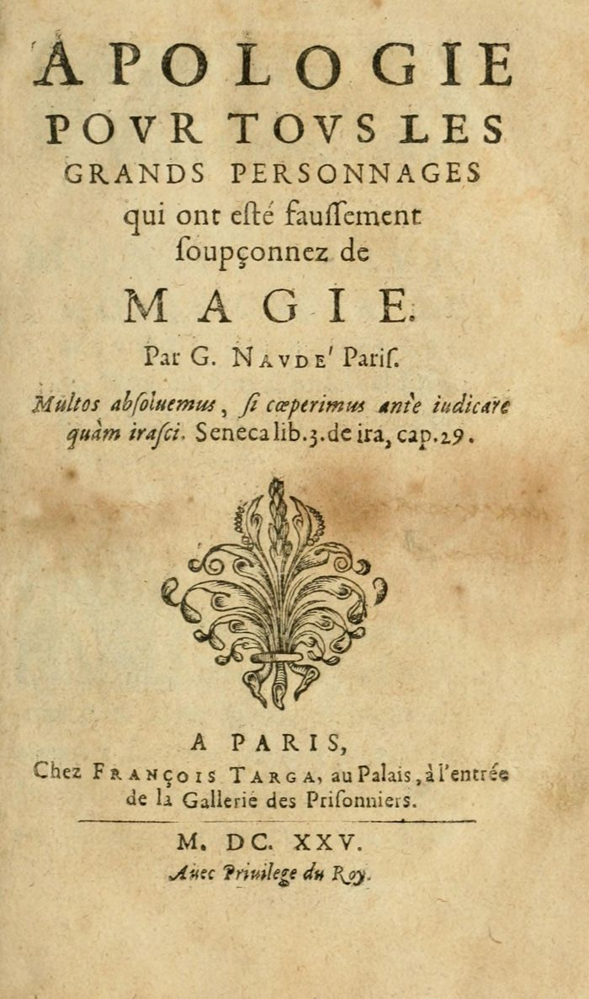
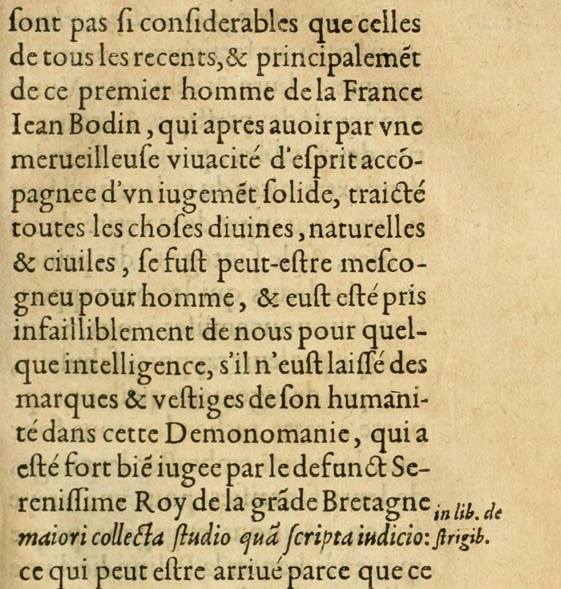
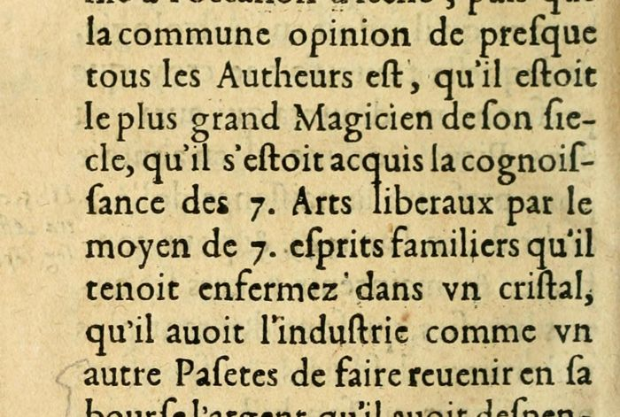

Toledo’s magic was mathematics (pp. 81–82)

French: Paris 1625, ch. V (“That mathematics have caused many who practised them to be suspected of magic”), p. 81, scan n112.
… that this city, to which God granted the privilege above all others that his doctrine should be confirmed and his Church upheld and ordered there by the gatherings of seventeen councils, was never the nurse and mistress of so many magicians; besides which, all who make Sylvester a magician agree that he learned what he knew of that science at Toledo. Therefore, since it is true, as we shall show below, that Sylvester was no enchanter but the first and most excellent mathematician of his age, we may reasonably conclude that everything said about this magic taught at Toledo must be understood of mathematics, which were so much in vogue there and so perfectly taught, that a certain Englishman named Daniel of Morley …
Original French
… que cette ville n’a point esté nourriciere & maistresse de tant de Magiciens, à laquelle Dieu a voulu donner cette prerogative sur toutes les autres, que sa doctrine y ait esté confirmée & son Eglise maintenue & policée par les assemblées de 17. Conciles: joinct que tous ceux qui font Sylvestre Magicien demeurent d’accord qu’il apprit ce qu’il sçavoit en cette science à Tolede. C’est pourquoy estant vray, comme nous le monstrerons cy apres, que Sylvestre n’estoit point Enchanteur, mais le premier & plus excellent Mathematicien de son siecle, nous pouvons conclure raisonnablement que tout ce que l’on dit de cette Magie enseignée à Tolede, se doit expliquer des Mathematiques, lesquelles y estoient en telle vogue & enseignées si parfaictement, bien qu’un certain Anglois nommé Daniel Morlerus …
Lecky’s note 4 (“Toledo was supposed to be the head-quarters of the magicians, probably because … mathematics, which were constantly confounded with magic, flourished there”) follows this. Naudé continues on p. 82 with Daniel of Morley, who had studied long in “Barbarie” before being advised to go to Toledo, and Alfonso X, who rewarded Arab scholars for drawing up his astronomical tables (p. 82 read in the OCR only). Sylvester is Pope Sylvester II (Gerbert).
“The magic arts have always followed heresies”: the theologians’ axiom (pp. 110–111)
French: Paris 1625, ch. VII, pp. 110–111, scans n141–n142. Naudé has just quoted Tertullian on the “commerce of heretics with magicians”.
… Hence our Catholic doctors, and principally Delrio and Maldonat, have taken occasion to lay down as an axiom confirmed by experience in every age that either the authors and followers of heresies were themselves magicians, like Simon Magus, Menander, Mark the Valentinian, Carpocrates, Priscillian, Berengar and Hermogenes, or that the magic and forbidden arts have always come after heresies. This they confirm from the historians of Spain, who relate that after the Arians had long remained there, devils for a long time tormented men there; and likewise the heresy of John Hus was followed by a great storm of sorcerers and demons through Bohemia and Germany, and that of the Waldenses through the Apennine mountains. For which the Jesuit Maldonat gives five chief reasons, which we shall pass over in silence …
Original French
… D’où nos Docteurs Catholiques, & principalement Delrio & Maldonat, ont pris occasion d’establir comme un Axiome confirmé de tout temps par l’experience, que ou les Autheurs & Sectateurs des Heresies ont esté eux mesmes Magiciens, comme Simon Magus, Menander, Marc Valentinian, Carpocrates, Priscillian, Berengarius, & Hermogenes; ou que les Arts Magiques & defendus ont tousiours succedé aux Heresies: Ce qu’ils confirment par les Historiens d’Espagne, qui recitent qu’apres que les Arrians eurent long temps demeuré en icelles les Diables y furent eux un long temps tourmenter les hommes: comme aussi l’heresie de Jean Hus fut suivie d’une grande tempeste de Sorciers & Demons par la Boeme & l’Allemagne, & celle des Vaudois par les Monts Apennins. De quoy le Jesuite Maldonat donne cinq raisons principales, lesquelles nous passerons sous silence …
Lecky’s note 63 says “Naudé … observes that nearly all the heresies previous to the Reformation had been also accompanied by an outburst of sorcery”. Naudé reports this as the axiom of the demonologists Martín Delrío and Juan Maldonado, and moves on without endorsing it. On the next lines he adds that the English used the charge of sorcery as a pretext to condemn Joan of Arc.
Bodin, “the first man of France”, and his human failing (p. 127)
French: Paris 1625, ch. VII, p. 127, scan n158, with Naudé’s margin.

… and principally of that first man of France, Jean Bodin, who, having treated all things divine, natural and civil with a marvellous liveliness of mind joined to a solid judgment, might perhaps have mistaken himself for more than a man, and would infallibly have been taken by us for some [angelic] intelligence, had he not left marks and traces of his humanity in this Démonomanie, which was very well judged by the late most serene King of Great Britain: “compiled with more diligence than written with judgment”. This may have happened because that great mind, who understood the holy tongue very well, amused himself more than he …
Original French
… & principalement de ce premier homme de la France Jean Bodin, qui apres avoir par une merveilleuse vivacité d’esprit accompagnée d’un jugement solide, traicté toutes les choses divines, naturelles & civiles, se fust peut-estre mescogneu pour homme, & eust esté pris infailliblement de nous pour quelque intelligence, s’il n’eust laissé des marques & vestiges de son humanité dans cette Demonomanie, qui a esté fort bien jugée par le defunct Serenissime Roy de la grande Bretagne, maiori collecta studio quam scripta iudicio: ce qui peut estre arrivé parce que ce grand Esprit qui entendoit fort bien la langue saincte, s’est amusé plus qu’il …
Lecky quotes the highlighted words almost exactly (with modernised accents), and stops before the sting. The king is James VI and I, author of Daemonologie; Naudé’s margin cites him “in lib. de strigib.”, his book on witches. For Bodin’s own book see the Démonomanie page.
Pietro d’Abano: seven spirits in a crystal, and a straw man burned (pp. 380–381)
French: Paris 1625, ch. XIV, pp. 380–381, scans n411–n412. Naudé’s defence of d’Abano runs on for some ten pages.

Now if the particular and over-curious study of astrology has always done harm to those who practised it, we may truly say that the celebrated and famous physician Pietro d’Abano felt the darts of calumny on its account far more than those before him, since the common opinion of almost all authors is that he was the greatest magician of his age, that he had acquired the knowledge of the seven liberal arts by means of seven familiar spirits which he kept shut up in a crystal, that he had the knack, like another Pases, of making the money he spent come back into his purse; and, to conclude with a proof as clear as it is certain, it is established that he was accused of magic in his eightieth year, and that, having died in 1305 before his trial was finished, they nevertheless, as Castellan relates, condemned him to the fire and burned a dummy of straw or wicker representing him in the public square of Padua, to suppress, by so severe an example and by fear of a like penalty, the reading of three superstitious and abominable books he had written on it, the first being that Heptameron now printed at the end of the first volume of Agrippa’s works …
Original French
Or si la particuliere & trop curieuse recherche de l’Astrologie a tousiours esté peu favorable à tous ceux qui l’ont pratiquée, nous pouvons dire avec verité que le celebre & fameux Medecin Pierre d’Apono s’est beaucoup plus que les precedens ressenti des traicts de la calomnie à l’occasion d’icelle, puis que la commune opinion de presque tous les Autheurs est, qu’il estoit le plus grand Magicien de son siecle, qu’il s’estoit acquis la cognoissance des 7. Arts liberaux par le moyen de 7. esprits familiers qu’il tenoit enfermez dans un cristal, qu’il avoit l’industrie comme un autre Pasetes de faire revenir en sa bourse l’argent qu’il avoit despencé; & que pour conclure par une preuve aussi manifeste qu’indubitable, il est constant qu’il fut accusé de Magie en l’an lxxx. de son aage, & qu’estant mort en l’an 1305. que son procés n’estoit encore finy, on ne laissa pourtant, au recit de Castellan, de le juger au feu & de brusler un faquin de paille ou d’osier qui le representoit dans la place publique de la ville de Padoüe, pour supprimer par un exemple si rigoureux, & par la crainte d’encourir une semblable peine, la lecture de trois livres superstitieux & abominables qu’il avoit composez en icelle, le premier desquels estoit cet Heptameron, qui est maintenant imprimé sur la fin du premier tome des œuvres d’Agrippa …
Lecky’s note 81 (“accused of magic when about eighty … seven familiar spirits whom he kept confined in a crystal … the inquisitors were obliged to content themselves by burning his image”) is this paragraph. Naudé reports it in order to refute it: on the following pages he cites the inscription under d’Abano’s statue at Padua, which says he was “so skilled in astrology that he fell under suspicion of magic, and, falsely accused of heresy, was acquitted” (p. 387, read in the OCR only). Pasetes or Pases was a magician of Greek legend whose money came back to him after he spent it. Renan, whom Lecky cites beside Naudé, tells it differently: the Inquisition burned d’Abano’s bones (see the Renan page).
“A long chapter to Agrippa” (ch. XV, pp. 400–429)
Lecky’s note 87 says “Naudé has also devoted a long chapter to Agrippa”. It is chapter XV, “De Henry Corneille Agrippa”, beginning on p. 400 (scan n431) and running to p. 429, where chapter XVI (Merlin, Savonarola and Nostradamus) begins (n461). Located by the headings; not transcribed. On Agrippa see Lecky’s note itself.
Further down the rabbit hole
Sources that Lecky cites in the notes next to the ones that cite this page.
- Garinet, Histoire de la Magie en FranceA history of magic in France, from the Frankish kings to the author’s own day
- Thiers, Traité des SuperstitionsThree papal bulls but no rebellion
- Bodin, Démonomanie des SorciersThe great lawyer who wrote the witch-hunters’ handbook
- Buckle, History of Civilization in EnglandWeather, superstition and the town (pp. 344–347)
- Madden, PhantasmataAn Irish doctor’s history of delusions, and the witch-burnings in an Alpine valley
- Maury, La magie et l’astrologieRoman laws against diviners, the first medieval doubters, and the praying heretics
Backlinks
Every place in Rationalism in Europe that links to this page (generated automatically when the site is built).